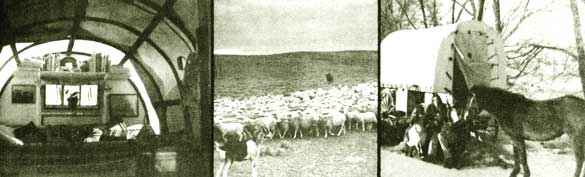

It all began when I read MOTHER NO. 3 and decided I'd like an old-time sheep wagon for a home. Since I knew there were quite a few of the sturdy relics abandoned here in rural eastern Montana, I started driving around in the country and asking farmer friends. Half a year's search turned up an old wooden-wheeled model which I could have free if I'd haul it away. Then I met Lynda and we decided the wagon looked big enough for two, so we got to work fixing it up.
We took off the old roof, exposing the beams, and re-covered the top with a heavy handwoven rug. Over this went new 18-ounce waterproof canvas, attached with strips of discarded inner tubes, so that on calm summer nights we could fold it back and sleep under the stars. Then we patched a few cracks, made a double canvas door, bought half a ton of coal, cleaned out our wood-burning stove and oven and settled in for the winter.
We lived on a farm which we rented with friends, ate with the others in the farmhouse and slept in our wagon at night. The rugged roof and wood-burning stove kept us comfortable (sometimes even too warm). Then, in the course of our first "sheep wagon winter", it struck us that the next logical step would be to go ahead and herd some sheep. We sent out inquiries and-to our surprise-landed a job which started April 1, during lambing time.
In March we painted our traveling home, took off the rug and remounted the wagon on an old truck frame with wooden spokes and rubber wheels. (Look, a front porch!) Then we licensed our rig, loaded up and headed for the new job. Our traveling speed was between 30 and 40 mph . . . with a short break for the installation of taillights, after we got fined $25.00 for not having any. On March 31, all of us-including horse, cat, dog and three goats-arrived at our destination.
The flock had already been sheared before we came, and on April 1 we began 21 days of lambing. "Sheep are born trying to die," Lynda's father had told us. We learned the truth of that statement right at the start . . . because woollies have the least maternal instinct of any critter I've dealt with. They're always having more lambs than they've got milk for, losing track of their babies, rejecting their lambs (sometimes killing them) and generally refusing any assistance you may try to give them.
My main job was to walk the yard where the 1,200 ewes were penned up and watch for newborn young. When I spotted one I picked it up, found the right mother and used the baby to lure her into the barn. There the dams and their offspring were kept in small pens called "jugs" and watched and helped for a few days.
Oftentimes, when I was carrying a lamb to a jug, a ewe that was about to give birth would butt the mother and all others out of the way and claim the newborn for herself. We called these funny troublemakers "Grannies". You could tell the real new mother by the bloody mucus hanging from her bottom . . . and frequently you had to hunt her down, catch her and force her into the jug with her youngster or youngsters. (Most often it was "youngsters"-twins or triplets-since the sheep I work with are bred to Swiss-Finn bucks which get a high percentage of multiple births.)
It can be complicated trying to decide which baby is whose when ewes drop their lambs at nearly the same time. This is a problem especially for the man who's on duty at night, when the flock is barned up. In the middle of lambing, 50 would sometimes give birth on one shift.
Lambs that end up without mothers are called "bums" and must be bottle fed. Sometimes, though, if we had a motherless young'un and a bereaved dam with good milk, we'd try putting the two together. That meant skinning the dead lamb, putting its "jacket" on the orphan and rubbing the live baby's face and legs with the liver. Sounds bloody, but most of the ewes were fooled and would accept their foster children after a while.
Bet you didn't know that sheep are born with long tails! All our lambs lost them after a few days of life, and the males were made into wethers. I liked lambing, but didn't care much for the docking and castrating . . . even though both jobs are now done with stiff rubber bands and not-as they used to be-with a knife and the teeth. We then branded the ewes and young with painted numbers and turned them out in small groups to nearby pastures. The lambs and sheared sheep are very vulnerable to cold weather and we lost 5 to 8% in a bad spring snowstorm . . . the worst loss of this kind my boss had suffered in 35 years.
On May 4 we moved out to the summer range with half the sheep, which were trucked the 30 miles there. A few weeks later the rest were brought out by trail. Our job was to watch 1,200 ewes and their lambs-called a "band"-on a 6,000-acre pasture . . . rolling land with some big open areas and some steeper, higher hills from which we could see for miles.
We located our sheep camp in a small valley surrounded by three of those high, plateau-like hills. There was one tree on the land, and various waterholes, including a big reservoir where we swam, bathed and planted our garden. We pitched a tipi beside our wagon for extra room and shade, and for our summer visitors. Our food was cooled with a propane refrigerator.
Because our pasture was "sheeptight" (surrounded by a six-wire fence) I didn't have to stay with the band all day. I rose before sunup and walked or rode around the area looking for coyotes. After dawn I pushed the sheep out of camp in the direction I wanted them to head, and stayed with them a few hours. In mid-afternoon I'd go out to see how the critters were doing, put any strays back in the pasture and fix some fence. Woollies are tough to hold!
In the evening I'd bring my charges back for the night. They weren't really hard to gather up . . . in fact, except for a few ornery old ladies, they'd usually start back on their own. Also, sheep have a "herd instinct": that is, when they sense danger they run together in a group. Once I had them bunched I started the animals home. My ewes were an older band and knew the way well enough to make it by themselves while I went after another lot.
I developed a cross between a scream and a war whoop which got the sheep moving, but I still couldn't have done the job without my dogs (a young border collie and a part blue heeler). Toward fall I could send one of them maybe a quarter of a mile after a bunch. The old herders had dogs which could be sent three and four miles away.
Both my helpers were fairly new at herding and sometimes goofed. Once one got overexcited and pushed about 50 head into a muddy ravine, where 10 of them got stuck. I had to take my clothes off, go belly deep into the black, sticky mess and drag the critters free. When I finished a few hours later and crawled out completely plastered, I avenged myself by throwing the dog in the mud.
I really enjoyed the beauty of this open land with its magical rock formations and quiet, majestic sunsets and sunrises. My horse and I loped all over the countryside . . . so far that I worried about overworking the mare and gave her oats and hay around the wagon. She quickly turned into a big pesty goat, always banging around outside our quarters and trying to get into our precious hauled water. At least she was very easy to catch (pretty important out in the open country). Next spring she should throw us a colt, so I'll have to use a different horse for a while.
One thing I didn't like about sheep country was the coyotes. They were bad, particularly in the fall when the spring pups got big enough to hunt on their own. Oftentimes they don't even clean up their kills. Good herding and tight fences help a lot, but hungry coyotes can get very bold . . . and they're hard to shoot from the ground in this open terrain where they can see you coming for miles.
Ranchers can no longer poison coyotes and there are no good hunting or trapping programs aimed at limiting their numbers. We agree with the ban on poisoning, but some control is needed or the brutes will put almost every sheepman out of business (as is already starting to happen around here). A look at the piles of bones around our summer pasture would convince most people of the problem.
Even with the coyote menace, though, we still had a good part of the summer to ourselves. The old-time sheepherder piled rocks, read cruddy books and drank whiskey to pass the time. We played music on our autoharp and guitar, studied home childbirth and did some leatherwork. (I make our footwear-moccasins-and hope to have collected a couple of cowhides by next year so I can make an Indian saddle and other things.)
We also walked a lot, starting with the mile to the mailbox twice a week. And every day we did a mile and a half on foot or horseback to hand-water the garden. Lynda and I had planned a good-sized patch but-after a few days of digging and breaking up the earth by hand-we settled for a plot 20' X 25'. We mulched the crops, had a fair harvest and learned a lot about food-growing in this area. In the fall we used our boss' rototiller to turn the soil over after adding sheep manure. Next year we'll have a water pump and-we hope-a better planned and more plentiful garden.
We ate a few of the local prairie chickens, and if I'd been a better shot we'd have had a wild turkey and the rabbit which nibbled some of our produce. I saw a few rattlesnakes and we thought about trying some of the meat, but decided not to kill them unless they endangered us. We also considered prickly pear cactus for our table . . . never got around to tackling it, though. There are cacti all over and it took us a good couple of weeks to learn to avoid stepping on them in our moccasins.
So the summer went on, and on August 27 Father Sky and Mother Earth gave us a beautiful 5-1/2-pound slightly red-haired daughter. We couldn't find a midwife to help, but had studied home birth for quite a while and went ahead anyhow. When contractions began we got the wagon ready and started our first Lamaze breathing exercise. Thirteen hours later we were still having contractions and felt that everything wasn't going as it should. We finally decided to drive to the hospital 75 miles away. Lynda had 34 hours of labor but because of the Lamaze method she never experienced much pain. Next child, we'll find some help and have a home birth.
Two words of advice if you're going to have a baby: Take the Lamaze course, and at least look through Let's Have Healthy Children by Adelle Davis. Nutrition is essential for a pregnant and nursing mother and a little babe.
We named our small one Wynden Sage, and she slept with us the rest of the time we were herding sheep. She was the delight of all the old farm couples who were our summer neighbors.
Then fall came, with welcome cooler days and lots of wildlife. I enjoyed that time the most out of the six months we spent on the range. On October 27 we trailed the sheep home and cut out the wether lambs for market. Our small family then moved into a house on the ranch-the first we've lived in since we've been together-to work for our boss through the winter.
Herding and farmwork are good jobs to have while you're trying to get your own place. You learn a lot, get plenty of sunshine and fresh air and can usually raise some stock of your own. (Our boss encourages us to keep critters, and will give us bum lambs to raise. He also feeds and shelters our goats and horse year round.) We don't make a lot of money, but our expenses are few and we save a good part. Soon we hope to be paying on 20 to 40 acres of our own.
If you've read this article, you already know more about sheep and herding than I did when I started. If you want to try our way of life, you can get names of possible employers through the Montana, Wyoming or Idaho Sheep Associations. Good luck!
|
|
 |
|